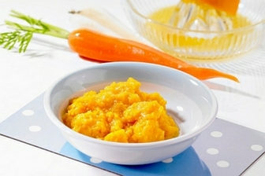

Kašica od sargarepe
Vreme pripreme:30minuta

Sastojci:
2 kašičice
1 kašičica maslinovog ulja
Postupak spremanja. Šaragrepu očistiti iseći i skuvati.
Nakon toga izmikasati i dodati maslinovo ulje.
Ovo je mesto za Vas komentar...